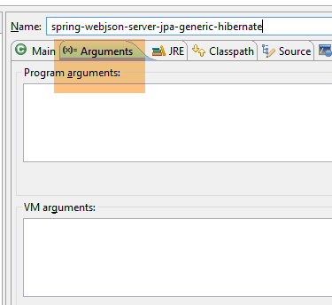
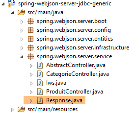
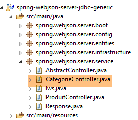
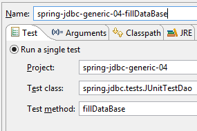
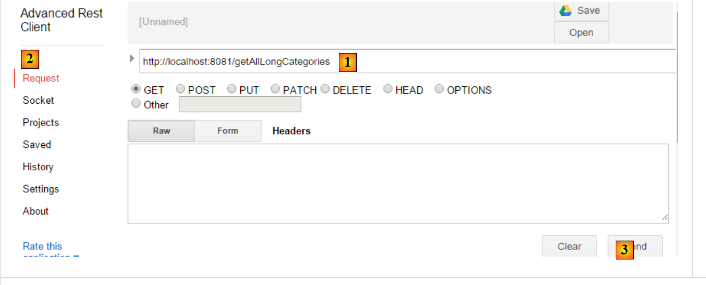

17. Exposing a Database on the Web
17.1. Web/JSON Service Architecture
We will implement the following architecture:
 |
- in [1], the [DAO, [JPA], JDBC] layers are implemented using one of the 24 configurations presented in the previous chapters, particularly in paragraph 15;
- the [DAO] layer [3] of the remote client implements the same interface as the [DAO] layer [1], which allows us to use the same test layer as in the previous chapters. It is as if layers [2-3] were transparent to layer [4];
We will rely on the following projects:
- the [sgbd-config-jdbc] project, which configures the JDBC layer of one of the six DBMSs;
- the [sgbd-config-jpa-*] project, which configures the JPA layer of the selected DBMS for one of the three JPA implementations studied (Hibernate, EclipseLink, OpenJpa);
- the generic project [spring-jdbc-04], which implements the [DAO] layer [1];
- the generic project [spring-jpa-generic] that implements the [DAO] layer [2];
- the generic project [spring-webjson-server-jdbc-generic], which implements a web service based on the [spring-jdbc-04] project;
- the generic project [spring-webjson-server-jpa-generic], which implements a web service based on the [spring-jpa-generic] project;
- the generic client [spring-webjson-client-generic], which will be the single client for all 24 web service configurations;
17.2. Setting up the development environment
We will be working with the following components:
- MySQL 5.6.25 database;
- Hibernate JPA implementation;
Import the following projects into STS:
 |
- The [spring-webjson-*] projects can be found in the [<examples>\spring-database-generic\spring-webjson] folder;
- Press [Alt-F5] and then regenerate all of the above projects;
To verify that the development environment is installed correctly, proceed as follows:
- Start the web service using the [spring-webjson-server-jpa-generic-hibernate] runtime configuration, which relies on a JPA/Hibernate implementation;
 |  |
then:
- launch the client for this web service using the [spring-webjson-client-generic] runtime configuration, which is a JUnit test:
 |  |
The test should pass:
 |
- In [1], stop the web service, then start the web service with the [spring-webjson-server-jdbc-generic] runtime configuration, which relies on a JDBC implementation:
 |  |
then launch the client for this web service with the [spring-webjson-client-generic] runtime configuration:
| |
The test should pass:
 |
17.3. Web Service / JSON / JDBC Implementation
We will first focus on the following architecture:
 |
where the [DAO] layer [1] communicates directly with the DBMS’s JDBC layer.
17.3.1. The Eclipse project for the web service
The Eclipse project for the web service / JSON / JDBC is as follows:
 |
It is a Maven project whose [pom.xml] file is as follows:
<project xmlns="http://maven.apache.org/POM/4.0.0" xmlns:xsi="http://www.w3.org/2001/XMLSchema-instance"
xsi:schemaLocation="http://maven.apache.org/POM/4.0.0 http://maven.apache.org/xsd/maven-4.0.0.xsd">
<modelVersion>4.0.0</modelVersion>
<groupId>dvp.spring.database</groupId>
<artifactId>spring-webjson-server-jdbc-generic</artifactId>
<version>0.0.1-SNAPSHOT</version>
<name>spring-webjson-server-jdbc-generic</name>
<description>démo spring mvc</description>
<parent>
<groupId>org.springframework.boot</groupId>
<artifactId>spring-boot-starter-parent</artifactId>
<version>1.2.3.RELEASE</version>
</parent>
<dependencies>
<!-- web layer -->
<dependency>
<groupId>org.springframework.boot</groupId>
<artifactId>spring-boot-starter-web</artifactId>
</dependency>
<!-- layer [DAO] -->
<dependency>
<groupId>dvp.spring.database</groupId>
<artifactId>spring-jdbc-generic-04</artifactId>
<version>0.0.1-SNAPSHOT</version>
</dependency>
</dependencies>
<!-- plugins -->
<build>
<plugins>
<plugin>
<groupId>org.apache.maven.plugins</groupId>
<artifactId>maven-surefire-plugin</artifactId>
<version>2.18.1</version>
</plugin>
</plugins>
</build>
</project>
- lines 11–15: the parent Maven project;
- lines 24–28: the dependency on the [DAO / JDBC] layer implemented by the [spring-jdbc-generic-04] project;
- lines 19–22: the dependency on the [spring-boot-starter-web] artifact. This artifact includes all the dependencies needed to create a web service / JSON. It also includes unnecessary libraries. A more precise configuration would therefore be necessary, but this configuration is useful for getting started.
The dependencies introduced by this configuration are as follows:
 |  | 1  |
- In [1], we can see that Eclipse has detected the dependency on the [spring-jdbc-generic-04] project archive;
The dependencies above are those of both the [DAO] layer and the [web] layer.
17.3.2. Configuration of the [web] layer
The [web] layer is configured by two Spring configuration files:
 |
17.3.2.1. The [WebConfig] class
The main role of the [WebConfig] class is to configure:
- the Tomcat server on which the web service will be deployed;
- the JSON filters for serializing and deserializing [Product] and [Category] objects:
package spring.webjson.server.config;
import java.util.List;
import org.springframework.beans.factory.annotation.Autowired;
import org.springframework.beans.factory.config.ConfigurableBeanFactory;
import org.springframework.boot.context.embedded.EmbeddedServletContainerFactory;
import org.springframework.boot.context.embedded.ServletRegistrationBean;
import org.springframework.boot.context.embedded.tomcat.TomcatEmbeddedServletContainerFactory;
import org.springframework.context.ApplicationContext;
import org.springframework.context.annotation.Bean;
import org.springframework.context.annotation.Configuration;
import org.springframework.context.annotation.Scope;
import org.springframework.http.converter.HttpMessageConverter;
import org.springframework.http.converter.json.MappingJackson2HttpMessageConverter;
import org.springframework.web.context.WebApplicationContext;
import org.springframework.web.servlet.DispatcherServlet;
import org.springframework.web.servlet.config.annotation.EnableWebMvc;
import org.springframework.web.servlet.config.annotation.WebMvcConfigurerAdapter;
import com.fasterxml.jackson.databind.ObjectMapper;
import com.fasterxml.jackson.databind.ser.impl.SimpleBeanPropertyFilter;
import com.fasterxml.jackson.databind.ser.impl.SimpleFilterProvider;
@Configuration
@EnableWebMvc
public class WebConfig extends WebMvcConfigurerAdapter {
// -------------------------------- layer configuration [web]
@Autowired
private ApplicationContext context;
@Bean
public DispatcherServlet dispatcherServlet() {
DispatcherServlet servlet=new DispatcherServlet((WebApplicationContext) context);
return servlet;
}
@Bean
public ServletRegistrationBean servletRegistrationBean(DispatcherServlet dispatcherServlet) {
return new ServletRegistrationBean(dispatcherServlet, "/*");
}
@Bean
public EmbeddedServletContainerFactory embeddedServletContainerFactory() {
return new TomcatEmbeddedServletContainerFactory("", 8081);
}
// -------------------------------- configuration filters [json]
...
}
- line 25: the class is a Spring configuration class;
- line 26: the [@EnableWebMvc] annotation indicates that the web layer is implemented using Spring MVC. This will trigger implicit configurations that we won’t have to set up;
- lines 30-31: injection of the application’s Spring context;
- lines 33–37: definition of the [dispatcherServlet] bean, which, in Spring MVC applications, acts as the [FrontController], whose role is to route client requests to the controller capable of handling them;
- lines 39–42: the web service servlet is registered along with the URLs it handles. Here we have written [/*], which means all URLs;
- Lines 44–47: Definition of the [embeddedServletContainerFactory] bean, which specifies the web server to use. In this case, it will be the Tomcat web server [http://tomcat.apache.org/]. You can also use the Jetty server [http://www.eclipse.org/jetty/]. Both are embedded servers included in the Maven dependencies. When [Spring Boot] initiates the project launch, it automatically starts the web server specified in the configuration and deploys the service or web application to it;
The JSON filters are configured as follows:
package spring.webjson.server.config;
import java.util.List;
...
@Configuration
@EnableWebMvc
public class WebConfig extends WebMvcConfigurerAdapter {
// -------------------------------- layer configuration [web]
...
// -------------------------------- configuration filters [json]
// mapping jSON
@Bean
public MappingJackson2HttpMessageConverter mappingJackson2HttpMessageConverter() {
final MappingJackson2HttpMessageConverter converter = new MappingJackson2HttpMessageConverter();
final ObjectMapper objectMapper = new ObjectMapper();
converter.setObjectMapper(objectMapper);
return converter;
}
@Override
public void configureMessageConverters(List<HttpMessageConverter<?>> converters) {
converters.add(mappingJackson2HttpMessageConverter());
super.configureMessageConverters(converters);
}
// filters jSON
@Bean
public ObjectMapper jsonMapper(MappingJackson2HttpMessageConverter mappingJackson2HttpMessageConverter) {
return mappingJackson2HttpMessageConverter.getObjectMapper();
}
@Bean
@Scope(value = ConfigurableBeanFactory.SCOPE_PROTOTYPE)
ObjectMapper jsonMapperShortCategorie(MappingJackson2HttpMessageConverter mappingJackson2HttpMessageConverter) {
ObjectMapper jsonMapper = jsonMapper(mappingJackson2HttpMessageConverter);
jsonMapper.setFilters(new SimpleFilterProvider().addFilter("jsonFilterCategorie",
SimpleBeanPropertyFilter.serializeAllExcept("produits")));
return jsonMapper;
}
@Bean
@Scope(value = ConfigurableBeanFactory.SCOPE_PROTOTYPE)
ObjectMapper jsonMapperLongCategorie(MappingJackson2HttpMessageConverter mappingJackson2HttpMessageConverter) {
ObjectMapper jsonMapper = jsonMapper(mappingJackson2HttpMessageConverter);
jsonMapper.setFilters(new SimpleFilterProvider().addFilter("jsonFilterCategorie",
SimpleBeanPropertyFilter.serializeAllExcept()).addFilter("jsonFilterProduit",
SimpleBeanPropertyFilter.serializeAllExcept("categorie")));
return jsonMapper;
}
@Bean
@Scope(value = ConfigurableBeanFactory.SCOPE_PROTOTYPE)
ObjectMapper jsonMapperShortProduit(MappingJackson2HttpMessageConverter mappingJackson2HttpMessageConverter) {
ObjectMapper jsonMapper = jsonMapper(mappingJackson2HttpMessageConverter);
jsonMapper.setFilters(new SimpleFilterProvider().addFilter("jsonFilterProduit",
SimpleBeanPropertyFilter.serializeAllExcept("categorie")));
return jsonMapper;
}
@Bean
@Scope(value = ConfigurableBeanFactory.SCOPE_PROTOTYPE)
ObjectMapper jsonMapperLongProduit(MappingJackson2HttpMessageConverter mappingJackson2HttpMessageConverter) {
ObjectMapper jsonMapper = jsonMapper(mappingJackson2HttpMessageConverter);
jsonMapper.setFilters(new SimpleFilterProvider().addFilter("jsonFilterProduit",
SimpleBeanPropertyFilter.serializeAllExcept()).addFilter("jsonFilterCategorie",
SimpleBeanPropertyFilter.serializeAllExcept("produits")));
return jsonMapper;
}
}
- Line 8: The [WebConfig] class extends the [WebMvcConfigurerAdapter] class. The latter class configures the web application with default values. When you want to customize this configuration, you must override certain methods of this class. Here, we want to override the [configureMessageConverters] method in lines [22–26] (note the @Override annotation), which defines a list of 'converters'. The web service/JSON and its client exchange lines of text. A converter is a tool capable of creating an object from a received text line (deserialization) and creating a text line from an object (serialization). Here, the text lines will be JSON strings. We will therefore refer to JSON serialization/deserialization;
- line 23: the [configureMessageConverters] method takes a list of converters as a parameter;
- Lines 24–25: The JSON converter [MappingJackson2HttpMessageConverter] from lines [14–20] is added to this list. This will enable JSON exchanges between the client and the server;
- lines [14-20]: define a JSON converter implemented by the [MappingJackson2HttpMessageConverter] class. This class (line 10) can be found in the project’s Maven dependencies;
- lines [17-18]: a JSON mapper is created and assigned to the [MappingJackson2HttpMessageConverter];
- lines [29-32]: define the JSON mapper created in line 17 as a Spring bean. This places it in the Spring context and makes it available to be injected into other beans or used in the web application code;
- lines 34-41: define a JSON filter for the previous JSON mapper;
- line 35: the annotation [@Scope(value = ConfigurableBeanFactory.SCOPE_PROTOTYPE)] ensures that the bean defined here is not a singleton. Each time it is requested from the context, the method [jsonMapperCategoryWithoutProducts] will be re-executed. This is necessary here because we are defining four JSON filters. However, only one should be active at any given time. By giving the bean the scope [ConfigurableBeanFactory.SCOPE_PROTOTYPE], we ensure that the method will be re-executed and that the previous filter will be replaced by the new one;
- To understand these filters, remember that in the [DAO] layer:
- the [Product] entity has been annotated with the [jsonFilterProduct] annotation;
- the [Category] entity has been annotated with [jsonFilterCategory];
We must therefore define filters with these names.
- lines [34-41]: define a filter called [jsonMapperShortCategorie] that provides the JSON representation of a category without its products;
- lines [43-51]: define a filter called [jsonMapperLongCategory] that provides the JSON representation of a category along with its products;
- lines [53-60]: define a filter called [jsonMapperShortProduct] that provides the JSON representation of a product without its category;
- lines [62-70]: define a filter called [jsonMapperLongProduct] that provides the JSON representation of a product with its category;
17.3.2.2. The [AppConfig] class
The [AppConfig] class configures the entire application, i.e., the [web] and [DAO] layers:
package spring.webjson.server.config;
import org.springframework.context.annotation.ComponentScan;
import org.springframework.context.annotation.Configuration;
import org.springframework.context.annotation.Import;
@Configuration
@ComponentScan(basePackages = { "spring.webjson.server.service" })
@Import({ spring.jdbc.config.AppConfig.class, WebConfig.class })
public class AppConfig {
}
- Line 7: The class is a Spring configuration class;
- line 9: we import the beans from the [DAO / JDBC] layer as well as those defined by the [WebConfig] class. All beans from the [DAO] layer will therefore be available in the web/JSON application;
- line 8: specifies the packages where other Spring beans can be found;
17.3.3. The [ServerException]
 |
Just as in the previous chapters, where the [DAO] layer threw an uncaught [DaoException], the [web] layer will throw an uncaught [ServerException]:
package spring.webjson.server.infrastructure;
import generic.jdbc.infrastructure.UncheckedException;
public class ServerException extends UncheckedException {
private static final long serialVersionUID = 1L;
// manufacturers
public ServerException() {
super();
}
public ServerException(int code, Throwable e, String simpleClassName) {
super(code, e, simpleClassName);
}
}
- line 5: the [ServerException] class extends the [UncheckedException] class defined in the project configuring the JDBC layer (line 3);
17.3.4. The controllers
 |
 |
Here we will have two controllers:
- [CategoryController] will handle requests related to categories;
- [CategorieController] will handle requests related to products;
The URLs exposed by the controllers correspond one-to-one to the methods of the [DaoCategorie] and [DaoProduit] interfaces in the [DAO] layer:
 |  |
So, as shown above:
- the web method [deleteAllCategories] will call the [deleteAllEntities] method of the [DaoCategorie] class;
- the web method [getShortCategoriesById] will call the [getShortEntitiesById] method of the [DaoCategorie] class;
The same applies to products:
 |  |
17.3.4.1. The URLs exposed by the [CategoryController]
| |
| |
| |
| |
| |
| |
| |
| |
| |
| |
17.3.4.2. The URLs exposed by the [ProductController]
| |
| |
| |
| |
| |
| |
| |
| |
| |
| |
17.3.5. Generic implementation of the web service
 |
The list of URLs exposed by the web service shows that we offer the same types of URLs for managing categories and products. Rather than writing two very similar controllers, we will have them derive from a class that will handle all the work common to both controllers. This will be the [AbstractController] class above. This class will implement the following [Iws] interface:
package spring.webjson.server.service;
import java.util.List;
import javax.servlet.http.HttpServletRequest;
import spring.jdbc.entities.AbstractCoreEntity;
public interface Iws<T extends AbstractCoreEntity> {
// list of all T entities
public Response<List<T>> getAllShortEntities();
public Response<List<T>> getAllLongEntities();
// special entities - short version
public Response<List<T>> getShortEntitiesById(HttpServletRequest request);
public Response<List<T>> getShortEntitiesByName(HttpServletRequest request);
// special entities - long version
public Response<List<T>> getLongEntitiesById(HttpServletRequest request);
public Response<List<T>> getLongEntitiesByName(HttpServletRequest request);
// update of several entities
public Response<List<T>> saveEntities(HttpServletRequest request);
// delete all entities
public Response<Void> deleteAllEntities();
// deletion of multiple entities
public Response<Void> deleteEntitiesById(HttpServletRequest request);
public Response<Void> deleteEntitiesByName(HttpServletRequest request);
}
This interface implements the methods of the [DAO] layer interface that will be used:
package spring.jdbc.dao;
import java.util.List;
import spring.jdbc.entities.AbstractCoreEntity;
public interface IDao<T extends AbstractCoreEntity> {
// list of all T entities
public List<T> getAllShortEntities();
public List<T> getAllLongEntities();
// special entities - short version
public List<T> getShortEntitiesById(Iterable<Long> ids);
public List<T> getShortEntitiesById(Long... ids);
public List<T> getShortEntitiesByName(Iterable<String> names);
public List<T> getShortEntitiesByName(String... names);
// special entities - long version
public List<T> getLongEntitiesById(Iterable<Long> ids);
public List<T> getLongEntitiesById(Long... ids);
public List<T> getLongEntitiesByName(Iterable<String> names);
public List<T> getLongEntitiesByName(String... names);
// update of several entities
public List<T> saveEntities(Iterable<T> entities);
public List<T> saveEntities(@SuppressWarnings("unchecked") T... entities);
// delete all entities
public void deleteAllEntities();
// deletion of multiple entities
public void deleteEntitiesById(Iterable<Long> ids);
public void deleteEntitiesById(Long... ids);
public void deleteEntitiesByName(Iterable<String> names);
public void deleteEntitiesByName(String... names);
public void deleteEntitiesByEntity(Iterable<T> entities);
public void deleteEntitiesByEntity(@SuppressWarnings("unchecked") T... entities);
}
The transition from the [IDao<T>] interface in the [DAO] layer to the [Iws<T>] interface in the web service followed these rules:
- the methods of the [Iws<T>] interface will not throw exceptions. If an exception occurs, it will be encapsulated in the [Response] object;
- parameter variations such as lines 45 and 47 [Iterable<String> names, String... names] are removed. The methods obtain their parameters from the client’s HTTP request of type [HttpServletRequest request];
All web service responses will be encapsulated in the following [Response] object:
 |
package spring.webjson.server.service;
public class Response<T> {
// ----------------- properties
// operation status
private int status;
// an error message
private String exception;
// the body of the reply
private T body;
// manufacturers
public Response() {
}
public Response(int status, String exception, T body) {
this.status = status;
this.exception = exception;
this.body = body;
}
// getters and setters
...
}
- line 4: the response encapsulates a type T;
- line 12: the response of type T;
- lines 7–10: a method may encounter an exception. In this case, it will return a response with:
- line 8: status!=0;
- line 10: an error message;
The [AbstractController] class is as follows:
package spring.webjson.server.service;
import java.util.List;
import javax.annotation.PostConstruct;
import javax.servlet.http.HttpServletRequest;
import org.springframework.beans.factory.annotation.Autowired;
import org.springframework.context.ApplicationContext;
import spring.jdbc.dao.IDao;
import spring.jdbc.entities.AbstractCoreEntity;
import spring.jdbc.infrastructure.DaoException;
import spring.webjson.server.infrastructure.ServerException;
import com.fasterxml.jackson.core.type.TypeReference;
import com.fasterxml.jackson.databind.ObjectMapper;
import com.google.common.io.CharStreams;
public abstract class AbstractController<T extends AbstractCoreEntity> implements Iws<T> {
@Autowired
protected ApplicationContext context;
// layer DAO
private IDao<T> dao;
abstract protected IDao<T> getDao();
// local
private String simpleClassName = getClass().getSimpleName();
@PostConstruct
public void init(){
dao=getDao();
}
@Override
public Response<List<T>> getAllShortEntities() {
try {
// answer
return new Response<List<T>>(0, null, dao.getAllShortEntities());
} catch (DaoException e) {
return new Response<List<T>>(1, e.toString(), null);
} catch (Exception e) {
return new Response<List<T>>(2, new ServerException(1007, e, simpleClassName).toString(), null);
}
}
@Override
public Response<List<T>> getAllLongEntities() {
try {
// answer
return new Response<List<T>>(0, null, dao.getAllLongEntities());
} catch (DaoException e) {
return new Response<List<T>>(1, e.toString(), null);
} catch (Exception e) {
return new Response<List<T>>(2, new ServerException(1008, e, simpleClassName).toString(), null);
}
}
@Override
public Response<List<T>> getShortEntitiesById(HttpServletRequest request) {
...
}
@Override
public Response<List<T>> getShortEntitiesByName(HttpServletRequest request) {
...
}
@Override
public Response<List<T>> getLongEntitiesById(HttpServletRequest request) {
...
}
@Override
public Response<List<T>> getLongEntitiesByName(HttpServletRequest request) {
...
}
@Override
public Response<List<T>> saveEntities(HttpServletRequest request) {
return new Response<List<T>>(2, new ServerException(1013, new RuntimeException("[saveEntities] not implemented"), simpleClassName).toString(), null);
}
@Override
public Response<Void> deleteAllEntities() {
try {
// we delete
dao.deleteAllEntities();
// answer
return new Response<Void>(0, null, null);
} catch (DaoException e) {
return new Response<Void>(1, e.toString(), null);
} catch (Exception e) {
return new Response<Void>(2, new ServerException(1014, e, simpleClassName).toString(), null);
}
}
@Override
public Response<Void> deleteEntitiesById(HttpServletRequest request) {
...
}
@Override
public Response<Void> deleteEntitiesByName(HttpServletRequest request) {
...
}
}
All methods are implemented in the same way:
- if they expect information, they retrieve it from the [HttpServletRequest request] object;
- they call the method in the [DAO] layer that has the same name as they do;
- they handle any exceptions that may occur, either in operation 1 (retrieving parameters) or in operation 2 (calling the [DAO] layer);
Let’s first examine how the [DAO] layer is injected into the [AbstractController] class:
public abstract class AbstractController<T extends AbstractCoreEntity> implements Iws<T> {
@Autowired
protected ApplicationContext context;
// layer DAO
private IDao<T> dao;
abstract protected IDao<T> getDao();
@PostConstruct
public void init(){
dao=getDao();
}
- line 1: the class is abstract and implements the generic interface [Iws<T>];
- lines 3-4: injection of the Spring context;
- line 7: the still-unknown reference to the [DAO] layer to be used;
- line 9: the abstract method [getDao] that will return the reference to the [DAO] layer to be used. This method will be overridden by the child class, so it is the child class that will specify which [DAO] layer to use (DaoProduct or DaoCategory);
- line 11: the [@PostConstruct] annotation marks a method to be executed once the object’s instantiation is complete. Once instantiation is complete, Spring injections have been performed. The child class will then have obtained the reference to its [DAO] layer and can therefore pass it to its parent;
The [getShortEntitiesById] method is as follows:
@Override
public Response<List<T>> getShortEntitiesById(HttpServletRequest request) {
try {
// retrieve the posted value
String body = CharStreams.toString(request.getReader());
// we deserialize it
ObjectMapper mapper = context.getBean("jsonMapper", ObjectMapper.class);
List<Long> ids = mapper.readValue(body, new TypeReference<List<Long>>() {
});
// answer
return new Response<List<T>>(0, null, dao.getShortEntitiesById(ids));
} catch (DaoException e) {
return new Response<List<T>>(1, e.toString(), null);
} catch (Exception e) {
return new Response<List<T>>(2, new ServerException(1009, e, simpleClassName).toString(), null);
}
}
- line 5: the value posted by the client will be a JSON string. This is where it is retrieved;
- lines 7–9: The JSON string contains the list of primary keys for the entities whose short version is desired;
- line 11: we call the [DAO] method of the same name. The response of type [List<T>] is encapsulated in a [Response] object;
- line 13: case where the [DAO] layer threw an exception;
- line 15: case for other exceptions, in particular the possible exception during deserialization of the JSON parameter, line 8;
The [getShortEntitiesByName] method is similar:
@Override
public Response<List<T>> getShortEntitiesByName(HttpServletRequest request) {
try {
// retrieve the posted value
String body = CharStreams.toString(request.getReader());
// we deserialize it
ObjectMapper mapper = context.getBean("jsonMapper", ObjectMapper.class);
List<String> noms = mapper.readValue(body, new TypeReference<List<String>>() {
});
// answer
return new Response<List<T>>(0, null, dao.getShortEntitiesByName(noms));
} catch (DaoException e) {
return new Response<List<T>>(1, e.toString(), null);
} catch (Exception e) {
return new Response<List<T>>(2, new ServerException(1010, e, simpleClassName).toString(), null);
}
}
- lines 4–9: here, the jSON parameter is the list of category names for which we want the short version;
The [saveEntities] method has not been implemented because it depends heavily on the type of entity being persisted, [Category] or [Product]. There is little code to refactor. This task is therefore left to the child classes.
@Override
public Response<List<T>> saveEntities(HttpServletRequest request) {
return new Response<List<T>>(2, new ServerException(1013, new RuntimeException("[saveEntities] not implemented"), simpleClassName).toString(), null);
}
17.3.6. The [CategoryController]
 |
The [CategorieController] controller handles URLs related to categories:
package spring.webjson.server.service;
import java.util.ArrayList;
import java.util.List;
import javax.servlet.http.HttpServletRequest;
import org.springframework.beans.factory.annotation.Autowired;
import org.springframework.web.bind.annotation.RequestMapping;
import org.springframework.web.bind.annotation.RequestMethod;
import org.springframework.web.bind.annotation.RestController;
import spring.jdbc.dao.IDao;
import spring.jdbc.entities.Categorie;
import spring.jdbc.entities.Produit;
import spring.jdbc.infrastructure.DaoException;
import spring.webjson.server.entities.CoreCategorie;
import spring.webjson.server.entities.CoreProduit;
import spring.webjson.server.infrastructure.ServerException;
import com.fasterxml.jackson.core.type.TypeReference;
import com.fasterxml.jackson.databind.ObjectMapper;
import com.google.common.io.CharStreams;
@RestController
public class CategorieController extends AbstractController<Categorie> {
@Autowired
private IDao<Categorie> daoCategorie;
@Override
protected IDao<Categorie> getDao() {
return daoCategorie;
}
// local
private String simpleClassName = getClass().getSimpleName();
@RequestMapping(value = "/getAllShortCategories", method = RequestMethod.GET)
public Response<List<Categorie>> getAllShortCategories() {
// parent
Response<List<Categorie>> response = super.getAllShortEntities();
// serialization filters jSON
context.getBean("jsonMapperShortCategorie", ObjectMapper.class);
// answer
return response;
}
@RequestMapping(value = "/getAllLongCategories", method = RequestMethod.GET)
public Response<List<Categorie>> getAllLongCategories() {
// parent
Response<List<Categorie>> response = super.getAllLongEntities();
// serialization filters jSON
context.getBean("jsonMapperLongCategorie", ObjectMapper.class);
// answer
return response;
}
@RequestMapping(value = "/getShortCategoriesById", method = RequestMethod.POST)
public Response<List<Categorie>> getShortCategoriesById(HttpServletRequest request) {
// parent
Response<List<Categorie>> response = super.getShortEntitiesById(request);
// serialization filters jSON
context.getBean("jsonMapperShortCategorie", ObjectMapper.class);
// answer
return response;
}
@RequestMapping(value = "/getShortCategoriesByName", method = RequestMethod.POST)
public Response<List<Categorie>> getShortCategoriesByName(HttpServletRequest request) {
// parent
Response<List<Categorie>> response = super.getShortEntitiesByName(request);
// serialization filters jSON
context.getBean("jsonMapperShortCategorie", ObjectMapper.class);
// answer
return response;
}
@RequestMapping(value = "/getLongCategoriesById", method = RequestMethod.POST)
public Response<List<Categorie>> getLongCategoriesById(HttpServletRequest request) {
// parent
Response<List<Categorie>> response = super.getLongEntitiesById(request);
// serialization filters jSON
context.getBean("jsonMapperLongCategorie", ObjectMapper.class);
// answer
return response;
}
@RequestMapping(value = "/getLongCategoriesByName", method = RequestMethod.POST)
public Response<List<Categorie>> getLongCategoriesByName(HttpServletRequest request) {
// parent
Response<List<Categorie>> response = super.getLongEntitiesByName(request);
// serialization filters jSON
context.getBean("jsonMapperLongCategorie", ObjectMapper.class);
// answer
return response;
}
@RequestMapping(value = "/saveCategories", method = RequestMethod.POST, consumes = "application/json; charset=UTF-8")
public Response<List<CoreCategorie>> saveCategories(HttpServletRequest request) {
...
}
@RequestMapping(value = "/deleteAllCategories", method = RequestMethod.GET)
public Response<Void> deleteAllCategories() {
return super.deleteAllEntities();
}
@RequestMapping(value = "/deleteCategoriesById", method = RequestMethod.POST, consumes = "application/json; charset=UTF-8")
public Response<Void> deleteCategoriesById(HttpServletRequest request) {
return super.deleteEntitiesById(request);
}
@RequestMapping(value = "/deleteCategoriesByName", method = RequestMethod.POST, consumes = "application/json; charset=UTF-8")
public Response<Void> deleteCategoriesByName(HttpServletRequest request) {
return super.deleteEntitiesByName(request);
}
}
- line 26: the [CategorieController] class extends the [AbstractController] class;
- line 25: the [@RestController] annotation makes the class a Spring component. This annotation also indicates that the class is a web service whose methods send their responses directly to the client in JSON format;
- lines 28–29: the reference to the [DAO] layer is injected here;
- lines 31–34: redefinition of the [getDao] method, declared abstract in the parent class, whose purpose is to return a reference to the [DAO] layer to be used;
The methods are all built on the same model:
- delegation of processing to the parent class;
- initialization of the JSON mapper that will serialize the response;
- sending the response;
Let’s take a look at the signatures of a few URLs:
| - the URL [/getAllShortCategories] is called with a GET |
| - The URL [/getShortCategoriesById] is called with a POST request. The posted value is the JSON string containing the primary keys of the desired categories; |
| - The URL [/getLongCategoriesByName] is called with a POST request. The posted value is the JSON string containing the names of the desired categories; |
Now, let’s take a closer look at the [saveCategories] method, which does not follow the format of the other methods:
@RequestMapping(value = "/saveCategories", method = RequestMethod.POST, consumes = "application/json; charset=UTF-8")
public Response<List<CoreCategorie>> saveCategories(HttpServletRequest request) {
// we persist categories
try {
// retrieve the posted value
String body = CharStreams.toString(request.getReader());
// we deserialize it
ObjectMapper mapper = context.getBean("jsonMapperLongCategorie", ObjectMapper.class);
List<Categorie> categories = mapper.readValue(body, new TypeReference<List<Categorie>>() {
});
// we persist categories
categories = daoCategorie.saveEntities(categories);
// we return the result
List<CoreCategorie> coreCategories = new ArrayList<CoreCategorie>();
for (Categorie categorie : categories) {
CoreCategorie coreCategorie = new CoreCategorie(categorie.getId());
coreCategories.add(coreCategorie);
List<Produit> produits = categorie.getProduits();
if (produits != null) {
List<CoreProduit> coreProduits = new ArrayList<CoreProduit>();
for (Produit produit : categorie.getProduits()) {
coreProduits.add(new CoreProduit(produit.getId()));
}
coreCategorie.setCoreProduits(coreProduits);
}
}
// result
return new Response<List<CoreCategorie>>(0, null, coreCategories);
} catch (DaoException e) {
return new Response<List<CoreCategorie>>(1, e.toString(), null);
} catch (Exception e) {
return new Response<List<CoreCategorie>>(2, new ServerException(1020, e, simpleClassName).toString(), null);
}
}
- line 1: the URL [/saveCategories] is accompanied by a POSTed value. This is the JSON string containing the full versions of the categories to be persisted;
- lines 5–10: The categories to be persisted are recreated from the JSON string. The [product.category] link connecting a [Product] to its [Category] is null because in the long version of a [Category], each [Product] is in its short version without its [category] field. This is not an issue, as the [DAO] layer implemented with JDBC does not require this information;
- line 12: the categories are persisted. The received list of categories has been enriched with the primary keys of the persisted elements, categories, and products. Nothing else has changed. Rather than returning the entire received list, which is costly, we will return only the primary keys of the elements in this list. To do this, we use the following [CoreCategory] and [CoreProduct] classes:
 |
package spring.webjson.server.entities;
import java.util.List;
public class CoreCategorie {
// primary key
private Long id;
// manufacturers
public CoreCategorie() {
}
public CoreCategorie(Long id) {
this.id=id;
}
// list of products
private List<CoreProduit> coreProduits;
// getters and setters
...
}
- line 8: the primary key of a product;
- line 20: the primary keys of its products;
package spring.webjson.server.entities;
public class CoreProduit {
// primary key
private Long id;
// manufacturers
public CoreProduit() {
}
public CoreProduit(Long id) {
this.id = id;
}
// getters and setters
...
}
- line 6: the primary key of a product;
Let's go back to the code for the [saveCategories] method:
...
// on persiste les catégories
categories = daoCategorie.saveEntities(categories);
// on rend le résultat
List<CoreCategorie> coreCategories = new ArrayList<CoreCategorie>();
for (Categorie categorie : categories) {
CoreCategorie coreCategorie = new CoreCategorie(categorie.getId());
coreCategories.add(coreCategorie);
List<Produit> produits = categorie.getProduits();
if (produits != null) {
List<CoreProduit> coreProduits = new ArrayList<CoreProduit>();
for (Produit produit : categorie.getProduits()) {
coreProduits.add(new CoreProduit(produit.getId()));
}
coreCategorie.setCoreProduits(coreProduits);
}
}
// résultat
return new Response<List<CoreCategorie>>(0, null, coreCategories);
...
- lines 5–17: we build the list of [CoreCategory] objects that we will return to the remote client;
- line 19: the response is returned and serialized to JSON;
17.3.7. Handling JSON filters
For each method of a controller, there are two points for JSON serialization/deserialization:
- deserialization of the posted value: this is handled explicitly here;
- serialization of the result: this is handled implicitly here;
Let’s start with deserializing the posted value in [CategorieController.saveCategories]:
@RequestMapping(value = "/saveCategories", method = RequestMethod.POST, consumes = "application/json; charset=UTF-8")
public Response<List<CoreCategorie>> saveCategories(HttpServletRequest request) {
// we persist categories
try {
// retrieve the posted value
String body = CharStreams.toString(request.getReader());
// we deserialize it
ObjectMapper mapper = context.getBean("jsonMapperLongCategorie", ObjectMapper.class);
List<Categorie> categories = mapper.readValue(body, new TypeReference<List<Categorie>>() {
});
- Line 8: We retrieve a mapper configured to handle the JSON filter [jsonMapperLongCategorie] from the Spring context. Let’s go back to the definition of this mapper in the configuration class [WebConfig]:
// -------------------------------- configuration filters [json]
// mapping jSON
@Bean
public MappingJackson2HttpMessageConverter mappingJackson2HttpMessageConverter() {
final MappingJackson2HttpMessageConverter converter = new MappingJackson2HttpMessageConverter();
final ObjectMapper objectMapper = new ObjectMapper();
converter.setObjectMapper(objectMapper);
return converter;
}
@Override
public void configureMessageConverters(List<HttpMessageConverter<?>> converters) {
converters.add(mappingJackson2HttpMessageConverter());
super.configureMessageConverters(converters);
}
// filters jSON
@Bean
public ObjectMapper jsonMapper(MappingJackson2HttpMessageConverter mappingJackson2HttpMessageConverter) {
return mappingJackson2HttpMessageConverter.getObjectMapper();
}
@Bean
@Scope(value = ConfigurableBeanFactory.SCOPE_PROTOTYPE)
ObjectMapper jsonMapperShortCategorie(MappingJackson2HttpMessageConverter mappingJackson2HttpMessageConverter) {
ObjectMapper jsonMapper = jsonMapper(mappingJackson2HttpMessageConverter);
jsonMapper.setFilters(new SimpleFilterProvider().addFilter("jsonFilterCategorie",
SimpleBeanPropertyFilter.serializeAllExcept("produits")));
return jsonMapper;
}
@Bean
@Scope(value = ConfigurableBeanFactory.SCOPE_PROTOTYPE)
ObjectMapper jsonMapperLongCategorie(MappingJackson2HttpMessageConverter mappingJackson2HttpMessageConverter) {
ObjectMapper jsonMapper = jsonMapper(mappingJackson2HttpMessageConverter);
jsonMapper.setFilters(new SimpleFilterProvider().addFilter("jsonFilterCategorie",
SimpleBeanPropertyFilter.serializeAllExcept()).addFilter("jsonFilterProduit",
SimpleBeanPropertyFilter.serializeAllExcept("categorie")));
return jsonMapper;
}
- lines 32–40: the JSON mapper [jsonMapperLongCategorie] retrieved by the [CategorieController] class;
- line 35: this mapper is returned by the [jsonMapper] method in lines 18–21;
- lines 18–21: the [jsonMapper] method returns the JSON mapper from the [MappingJackson2HttpMessageConverter] in lines 3–9;
In other words, the JSON mapper retrieved by line 4 below in [CategorieController.saveCategories]:
// on récupère la valeur postée
String body = CharStreams.toString(request.getReader());
// on la désérialise
ObjectMapper mapper = context.getBean("jsonMapperLongCategorie", ObjectMapper.class);
List<Categorie> categories = mapper.readValue(body, new TypeReference<List<Categorie>>() {
});
is the default converter used by Spring MVC to deserialize the value posted by the client and serialize the result sent back to it. In the lines above, there was no implicit deserialization of the posted value. To do this, you would have had to write:
@RequestMapping(value = "/saveCategories", method = RequestMethod.POST, consumes = "application/json; charset=UTF-8")
public Response<List<CoreCategorie>> saveCategories(@RequestBody List<Categorie> categories) {
In this case, there would have been automatic deserialization of the value posted in the [categories] parameter. But there was the issue of the [jsonFilterCategorie] filter that the [Categorie] entities have. It needs to be configured. That is why we chose explicit deserialization (lines 4–5). The second point to note is that the mapper on line 4 (which is the one used by default by Spring MVC) is also suitable for serializing the result [Response<List<CoreCategory>]. In fact, the [CoreCategorie] entity does not have a JSON filter. Therefore, there is no need to configure the resulting JSON mapper with an additional filter. In this case, the response sent to the client will be serialized implicitly.
17.3.8. The [ProductController]
 |
The [ProduitController] controller handles URLs related to products. Its code is similar to that of the [CategorieController] controller:
package spring.webjson.server.service;
import java.util.ArrayList;
import java.util.List;
import javax.servlet.http.HttpServletRequest;
import org.springframework.beans.factory.annotation.Autowired;
import org.springframework.web.bind.annotation.RequestMapping;
import org.springframework.web.bind.annotation.RequestMethod;
import org.springframework.web.bind.annotation.RestController;
import spring.jdbc.dao.IDao;
import spring.jdbc.entities.Produit;
import spring.jdbc.infrastructure.DaoException;
import spring.webjson.server.entities.CoreProduit;
import spring.webjson.server.infrastructure.ServerException;
import com.fasterxml.jackson.core.type.TypeReference;
import com.fasterxml.jackson.databind.ObjectMapper;
import com.google.common.io.CharStreams;
@RestController
public class ProduitController extends AbstractController<Produit> {
@Autowired
private IDao<Produit> daoProduit;
@Override
protected IDao<Produit> getDao() {
return daoProduit;
}
// local
private String simpleClassName = getClass().getSimpleName();
@RequestMapping(value = "/getAllShortProduits", method = RequestMethod.GET)
public Response<List<Produit>> getAllShortProduits() {
// parent
Response<List<Produit>> response = super.getAllShortEntities();
// serialization filters jSON
context.getBean("jsonMapperShortProduit", ObjectMapper.class);
// answer
return response;
}
@RequestMapping(value = "/getAllLongProduits", method = RequestMethod.GET)
public Response<List<Produit>> getAllLongProduits() {
// parent
Response<List<Produit>> response = super.getAllLongEntities();
// serialization filters jSON
context.getBean("jsonMapperLongProduit", ObjectMapper.class);
// answer
return response;
}
@RequestMapping(value = "/getShortProduitsById", method = RequestMethod.POST, consumes = "application/json; charset=UTF-8")
public Response<List<Produit>> getShortProduitsById(HttpServletRequest request) {
// parent
Response<List<Produit>> response = super.getShortEntitiesById(request);
// serialization filters jSON
context.getBean("jsonMapperShortProduit", ObjectMapper.class);
// answer
return response;
}
@RequestMapping(value = "/getShortProduitsByName", method = RequestMethod.POST, consumes = "application/json; charset=UTF-8")
public Response<List<Produit>> getShortProduitsByName(HttpServletRequest request) {
// parent
Response<List<Produit>> response = super.getShortEntitiesByName(request);
// serialization filters jSON
context.getBean("jsonMapperShortProduit", ObjectMapper.class);
// answer
return response;
}
@RequestMapping(value = "/getLongProduitsById", method = RequestMethod.POST, consumes = "application/json; charset=UTF-8")
public Response<List<Produit>> getLongProduitsById(HttpServletRequest request) {
// parent
Response<List<Produit>> response = super.getLongEntitiesById(request);
// serialization filters jSON
context.getBean("jsonMapperLongProduit", ObjectMapper.class);
// answer
return response;
}
@RequestMapping(value = "/getLongProduitsByName", method = RequestMethod.POST, consumes = "application/json; charset=UTF-8")
public Response<List<Produit>> getLongProduitsByName(HttpServletRequest request) {
// parent
Response<List<Produit>> response = super.getLongEntitiesByName(request);
// serialization filters jSON
context.getBean("jsonMapperLongProduit", ObjectMapper.class);
// answer
return response;
}
@RequestMapping(value = "/saveProduits", method = RequestMethod.POST, consumes = "application/json; charset=UTF-8")
public Response<List<CoreProduit>> saveProduits(HttpServletRequest request) {
...
}
@RequestMapping(value = "/deleteAllProduits", method = RequestMethod.GET)
public Response<Void> deleteAllProduits() {
return super.deleteAllEntities();
}
@RequestMapping(value = "/deleteProduitsById", method = RequestMethod.POST, consumes = "application/json; charset=UTF-8")
public Response<Void> deleteProduitsById(HttpServletRequest request) {
return super.deleteEntitiesById(request);
}
@RequestMapping(value = "/deleteProduitsByName", method = RequestMethod.POST, consumes = "application/json; charset=UTF-8")
public Response<Void> deleteProduitsByName(HttpServletRequest request) {
return super.deleteEntitiesByName(request);
}
}
Only the [saveProducts] method has a different structure from the other methods:
@RequestMapping(value = "/saveProduits", method = RequestMethod.POST, consumes = "application/json; charset=UTF-8")
public Response<List<CoreProduit>> saveProduits(HttpServletRequest request) {
try {
// retrieve the posted value
String body = CharStreams.toString(request.getReader());
// we deserialize it
ObjectMapper mapper = context.getBean("jsonMapperShortProduit", ObjectMapper.class);
List<Produit> produits = mapper.readValue(body, new TypeReference<List<Produit>>() {
});
// we persist products
produits = daoProduit.saveEntities(produits);
List<CoreProduit> coreProduits = new ArrayList<CoreProduit>();
for (Produit produit : produits) {
coreProduits.add(new CoreProduit(produit.getId()));
}
// we return the answer
return new Response<List<CoreProduit>>(0, null, coreProduits);
} catch (DaoException e) {
return new Response<List<CoreProduit>>(1, e.toString(), null);
} catch (Exception e) {
return new Response<List<CoreProduit>>(2, new ServerException(1021, e, simpleClassName).toString(), null);
}
}
- lines 4–9: From the received JSON string, we reconstruct the list of [Product] objects to be persisted. Since the received JSON string contains the short versions of the products, their [category] field is null. Once again, the DAO/JDBC layer does not need this information;
- line 11: the products are persisted;
- lines 12–15: the list of [CoreProduct] objects to be returned is constructed;
- line 18: the response is returned, which will be serialized (implicit serialization performed by Spring MVC) by the mapper from line 7 before being sent to the remote client (see discussion in section 17.3.7);
17.3.9. The web service / JSON execution class
 |
The [Boot] class is the project’s executable class:
package spring.webjson.server.boot;
import org.springframework.boot.SpringApplication;
import spring.webjson.server.config.AppConfig;
public class Boot {
public static void main(String[] args) {
SpringApplication.run(AppConfig.class, args);
}
}
- Line 10: The static method [SpringApplication.run] is executed. The [SpringApplication] class is a class from the [Spring Boot] project (line 3). Two parameters are passed to it:
- [AppConfig.class]: the class that configures the entire application;
- [args]: any arguments passed to the [main] method on line 9. This parameter is not used here;
When this class is executed, the following logs are generated:
. ____ _ __ _ _
/\\ / ___'_ __ _ _(_)_ __ __ _ \ \ \ \
( ( )\___ | '_ | '_| | '_ \/ _` | \ \ \ \
\\/ ___)| |_)| | | | | || (_| | ) ) ) )
' |____| .__|_| |_|_| |_\__, | / / / /
=========|_|==============|___/=/_/_/_/
:: Spring Boot :: (v1.2.3.RELEASE)
11:34:08.661 [main] INFO spring.webjson.server.boot.Boot - Starting Boot on Gportpers3 with PID 6796 (started by ST in D:\data\istia-1415\spring data\dvp\dvp-spring-database-05\spring-database-generic\spring-webjson\spring-webjson-server-jdbc-generic)
11:34:08.700 [main] INFO o.s.b.c.e.AnnotationConfigEmbeddedWebApplicationContext - Refreshing org.springframework.boot.context.embedded.AnnotationConfigEmbeddedWebApplicationContext@2df32bf7: startup date [Mon Jun 08 11:34:08 CEST 2015]; root of context hierarchy
11:34:08.916 [main] INFO o.s.b.f.s.DefaultListableBeanFactory - Overriding bean definition for bean 'jsonMapper': replacing [Root bean: class [null]; scope=; abstract=false; lazyInit=false; autowireMode=3; dependencyCheck=0; autowireCandidate=true; primary=false; factoryBeanName=generic.jdbc.config.ConfigJdbc; factoryMethodName=jsonMapper; initMethodName=null; destroyMethodName=(inferred); defined in class generic.jdbc.config.ConfigJdbc] with [Root bean: class [null]; scope=; abstract=false; lazyInit=false; autowireMode=3; dependencyCheck=0; autowireCandidate=true; primary=false; factoryBeanName=spring.webjson.server.config.WebConfig; factoryMethodName=jsonMapper; initMethodName=null; destroyMethodName=(inferred); defined in class spring.webjson.server.config.WebConfig]
11:34:08.917 [main] INFO o.s.b.f.s.DefaultListableBeanFactory - Overriding bean definition for bean 'jsonMapperLongCategorie': replacing [Root bean: class [null]; scope=prototype; abstract=false; lazyInit=false; autowireMode=3; dependencyCheck=0; autowireCandidate=true; primary=false; factoryBeanName=generic.jdbc.config.ConfigJdbc; factoryMethodName=jsonMapperLongCategorie; initMethodName=null; destroyMethodName=(inferred); defined in class generic.jdbc.config.ConfigJdbc] with [Root bean: class [null]; scope=prototype; abstract=false; lazyInit=false; autowireMode=3; dependencyCheck=0; autowireCandidate=true; primary=false; factoryBeanName=spring.webjson.server.config.WebConfig; factoryMethodName=jsonMapperLongCategorie; initMethodName=null; destroyMethodName=(inferred); defined in class spring.webjson.server.config.WebConfig]
11:34:08.918 [main] INFO o.s.b.f.s.DefaultListableBeanFactory - Overriding bean definition for bean 'jsonMapperShortProduit': replacing [Root bean: class [null]; scope=prototype; abstract=false; lazyInit=false; autowireMode=3; dependencyCheck=0; autowireCandidate=true; primary=false; factoryBeanName=generic.jdbc.config.ConfigJdbc; factoryMethodName=jsonMapperShortProduit; initMethodName=null; destroyMethodName=(inferred); defined in class generic.jdbc.config.ConfigJdbc] with [Root bean: class [null]; scope=prototype; abstract=false; lazyInit=false; autowireMode=3; dependencyCheck=0; autowireCandidate=true; primary=false; factoryBeanName=spring.webjson.server.config.WebConfig; factoryMethodName=jsonMapperShortProduit; initMethodName=null; destroyMethodName=(inferred); defined in class spring.webjson.server.config.WebConfig]
11:34:08.919 [main] INFO o.s.b.f.s.DefaultListableBeanFactory - Overriding bean definition for bean 'jsonMapperShortCategorie': replacing [Root bean: class [null]; scope=prototype; abstract=false; lazyInit=false; autowireMode=3; dependencyCheck=0; autowireCandidate=true; primary=false; factoryBeanName=generic.jdbc.config.ConfigJdbc; factoryMethodName=jsonMapperShortCategorie; initMethodName=null; destroyMethodName=(inferred); defined in class generic.jdbc.config.ConfigJdbc] with [Root bean: class [null]; scope=prototype; abstract=false; lazyInit=false; autowireMode=3; dependencyCheck=0; autowireCandidate=true; primary=false; factoryBeanName=spring.webjson.server.config.WebConfig; factoryMethodName=jsonMapperShortCategorie; initMethodName=null; destroyMethodName=(inferred); defined in class spring.webjson.server.config.WebConfig]
11:34:08.919 [main] INFO o.s.b.f.s.DefaultListableBeanFactory - Overriding bean definition for bean 'jsonMapperLongProduit': replacing [Root bean: class [null]; scope=prototype; abstract=false; lazyInit=false; autowireMode=3; dependencyCheck=0; autowireCandidate=true; primary=false; factoryBeanName=generic.jdbc.config.ConfigJdbc; factoryMethodName=jsonMapperLongProduit; initMethodName=null; destroyMethodName=(inferred); defined in class generic.jdbc.config.ConfigJdbc] with [Root bean: class [null]; scope=prototype; abstract=false; lazyInit=false; autowireMode=3; dependencyCheck=0; autowireCandidate=true; primary=false; factoryBeanName=spring.webjson.server.config.WebConfig; factoryMethodName=jsonMapperLongProduit; initMethodName=null; destroyMethodName=(inferred); defined in class spring.webjson.server.config.WebConfig]
11:34:09.409 [main] INFO o.s.b.c.e.t.TomcatEmbeddedServletContainer - Tomcat initialized with port(s): 8081 (http)
11:34:09.641 [main] INFO o.a.catalina.core.StandardService - Starting service Tomcat
11:34:09.642 [main] INFO o.a.catalina.core.StandardEngine - Starting Servlet Engine: Apache Tomcat/8.0.20
11:34:09.778 [localhost-startStop-1] INFO o.a.c.c.C.[Tomcat].[localhost].[/] - Initializing Spring embedded WebApplicationContext
11:34:09.778 [localhost-startStop-1] INFO o.s.web.context.ContextLoader - Root WebApplicationContext: initialization completed in 1081 ms
11:34:09.839 [localhost-startStop-1] INFO o.s.b.c.e.ServletRegistrationBean - Mapping servlet: 'dispatcherServlet' to [/*]
11:34:10.558 [main] INFO o.h.validator.internal.util.Version - HV000001: Hibernate Validator 5.1.3.Final
11:34:10.654 [main] INFO o.s.w.s.m.m.a.RequestMappingHandlerAdapter - Looking for @ControllerAdvice: org.springframework.boot.context.embedded.AnnotationConfigEmbeddedWebApplicationContext@2df32bf7: startup date [Mon Jun 08 11:34:08 CEST 2015]; root of context hierarchy
11:34:10.745 [main] INFO o.s.w.s.m.m.a.RequestMappingHandlerMapping - Mapped "{[/saveCategories],methods=[POST],params=[],headers=[],consumes=[application/json;charset=UTF-8],produces=[],custom=[]}" onto public spring.webjson.server.service.Response<java.util.List<spring.webjson.server.entities.CoreCategorie>> spring.webjson.server.service.CategorieController.saveCategories(javax.servlet.http.HttpServletRequest)
11:34:10.745 [main] INFO o.s.w.s.m.m.a.RequestMappingHandlerMapping - Mapped "{[/deleteCategoriesById],methods=[POST],params=[],headers=[],consumes=[application/json;charset=UTF-8],produces=[],custom=[]}" onto public spring.webjson.server.service.Response<java.lang.Void> spring.webjson.server.service.CategorieController.deleteCategoriesById(javax.servlet.http.HttpServletRequest)
11:34:10.745 [main] INFO o.s.w.s.m.m.a.RequestMappingHandlerMapping - Mapped "{[/getShortCategoriesByName],methods=[POST],params=[],headers=[],consumes=[application/json;charset=UTF-8],produces=[],custom=[]}" onto public spring.webjson.server.service.Response<java.util.List<spring.jdbc.entities.Categorie>> spring.webjson.server.service.CategorieController.getShortCategoriesByName(javax.servlet.http.HttpServletRequest)
11:34:10.746 [main] INFO o.s.w.s.m.m.a.RequestMappingHandlerMapping - Mapped "{[/getAllLongCategories],methods=[GET],params=[],headers=[],consumes=[],produces=[],custom=[]}" onto public spring.webjson.server.service.Response<java.util.List<spring.jdbc.entities.Categorie>> spring.webjson.server.service.CategorieController.getAllLongCategories()
11:34:10.746 [main] INFO o.s.w.s.m.m.a.RequestMappingHandlerMapping - Mapped "{[/getLongCategoriesById],methods=[POST],params=[],headers=[],consumes=[application/json;charset=UTF-8],produces=[],custom=[]}" onto public spring.webjson.server.service.Response<java.util.List<spring.jdbc.entities.Categorie>> spring.webjson.server.service.CategorieController.getLongCategoriesById(javax.servlet.http.HttpServletRequest)
11:34:10.746 [main] INFO o.s.w.s.m.m.a.RequestMappingHandlerMapping - Mapped "{[/deleteCategoriesByName],methods=[POST],params=[],headers=[],consumes=[application/json;charset=UTF-8],produces=[],custom=[]}" onto public spring.webjson.server.service.Response<java.lang.Void> spring.webjson.server.service.CategorieController.deleteCategoriesByName(javax.servlet.http.HttpServletRequest)
11:34:10.746 [main] INFO o.s.w.s.m.m.a.RequestMappingHandlerMapping - Mapped "{[/getShortCategoriesById],methods=[POST],params=[],headers=[],consumes=[application/json;charset=UTF-8],produces=[],custom=[]}" onto public spring.webjson.server.service.Response<java.util.List<spring.jdbc.entities.Categorie>> spring.webjson.server.service.CategorieController.getShortCategoriesById(javax.servlet.http.HttpServletRequest)
11:34:10.746 [main] INFO o.s.w.s.m.m.a.RequestMappingHandlerMapping - Mapped "{[/getAllShortCategories],methods=[GET],params=[],headers=[],consumes=[],produces=[],custom=[]}" onto public spring.webjson.server.service.Response<java.util.List<spring.jdbc.entities.Categorie>> spring.webjson.server.service.CategorieController.getAllShortCategories()
11:34:10.747 [main] INFO o.s.w.s.m.m.a.RequestMappingHandlerMapping - Mapped "{[/getLongCategoriesByName],methods=[POST],params=[],headers=[],consumes=[application/json;charset=UTF-8],produces=[],custom=[]}" onto public spring.webjson.server.service.Response<java.util.List<spring.jdbc.entities.Categorie>> spring.webjson.server.service.CategorieController.getLongCategoriesByName(javax.servlet.http.HttpServletRequest)
11:34:10.747 [main] INFO o.s.w.s.m.m.a.RequestMappingHandlerMapping - Mapped "{[/deleteAllCategories],methods=[GET],params=[],headers=[],consumes=[],produces=[],custom=[]}" onto public spring.webjson.server.service.Response<java.lang.Void> spring.webjson.server.service.CategorieController.deleteAllCategories()
11:34:10.748 [main] INFO o.s.w.s.m.m.a.RequestMappingHandlerMapping - Mapped "{[/saveProduits],methods=[POST],params=[],headers=[],consumes=[application/json;charset=UTF-8],produces=[],custom=[]}" onto public spring.webjson.server.service.Response<java.util.List<spring.webjson.server.entities.CoreProduit>> spring.webjson.server.service.ProduitController.saveProduits(javax.servlet.http.HttpServletRequest)
11:34:10.749 [main] INFO o.s.w.s.m.m.a.RequestMappingHandlerMapping - Mapped "{[/getShortProduitsById],methods=[POST],params=[],headers=[],consumes=[application/json;charset=UTF-8],produces=[],custom=[]}" onto public spring.webjson.server.service.Response<java.util.List<spring.jdbc.entities.Produit>> spring.webjson.server.service.ProduitController.getShortProduitsById(javax.servlet.http.HttpServletRequest)
11:34:10.749 [main] INFO o.s.w.s.m.m.a.RequestMappingHandlerMapping - Mapped "{[/getAllLongProduits],methods=[GET],params=[],headers=[],consumes=[],produces=[],custom=[]}" onto public spring.webjson.server.service.Response<java.util.List<spring.jdbc.entities.Produit>> spring.webjson.server.service.ProduitController.getAllLongProduits()
11:34:10.749 [main] INFO o.s.w.s.m.m.a.RequestMappingHandlerMapping - Mapped "{[/getShortProduitsByName],methods=[POST],params=[],headers=[],consumes=[application/json;charset=UTF-8],produces=[],custom=[]}" onto public spring.webjson.server.service.Response<java.util.List<spring.jdbc.entities.Produit>> spring.webjson.server.service.ProduitController.getShortProduitsByName(javax.servlet.http.HttpServletRequest)
11:34:10.749 [main] INFO o.s.w.s.m.m.a.RequestMappingHandlerMapping - Mapped "{[/getAllShortProduits],methods=[GET],params=[],headers=[],consumes=[],produces=[],custom=[]}" onto public spring.webjson.server.service.Response<java.util.List<spring.jdbc.entities.Produit>> spring.webjson.server.service.ProduitController.getAllShortProduits()
11:34:10.749 [main] INFO o.s.w.s.m.m.a.RequestMappingHandlerMapping - Mapped "{[/deleteProduitsByName],methods=[POST],params=[],headers=[],consumes=[application/json;charset=UTF-8],produces=[],custom=[]}" onto public spring.webjson.server.service.Response<java.lang.Void> spring.webjson.server.service.ProduitController.deleteProduitsByName(javax.servlet.http.HttpServletRequest)
11:34:10.750 [main] INFO o.s.w.s.m.m.a.RequestMappingHandlerMapping - Mapped "{[/getLongProduitsByName],methods=[POST],params=[],headers=[],consumes=[application/json;charset=UTF-8],produces=[],custom=[]}" onto public spring.webjson.server.service.Response<java.util.List<spring.jdbc.entities.Produit>> spring.webjson.server.service.ProduitController.getLongProduitsByName(javax.servlet.http.HttpServletRequest)
11:34:10.750 [main] INFO o.s.w.s.m.m.a.RequestMappingHandlerMapping - Mapped "{[/deleteProduitsById],methods=[POST],params=[],headers=[],consumes=[application/json;charset=UTF-8],produces=[],custom=[]}" onto public spring.webjson.server.service.Response<java.lang.Void> spring.webjson.server.service.ProduitController.deleteProduitsById(javax.servlet.http.HttpServletRequest)
11:34:10.750 [main] INFO o.s.w.s.m.m.a.RequestMappingHandlerMapping - Mapped "{[/deleteAllProduits],methods=[GET],params=[],headers=[],consumes=[],produces=[],custom=[]}" onto public spring.webjson.server.service.Response<java.lang.Void> spring.webjson.server.service.ProduitController.deleteAllProduits()
11:34:10.750 [main] INFO o.s.w.s.m.m.a.RequestMappingHandlerMapping - Mapped "{[/getLongProduitsById],methods=[POST],params=[],headers=[],consumes=[application/json;charset=UTF-8],produces=[],custom=[]}" onto public spring.webjson.server.service.Response<java.util.List<spring.jdbc.entities.Produit>> spring.webjson.server.service.ProduitController.getLongProduitsById(javax.servlet.http.HttpServletRequest)
11:34:10.809 [main] INFO o.a.coyote.http11.Http11NioProtocol - Initializing ProtocolHandler ["http-nio-8081"]
11:34:10.826 [main] INFO o.a.coyote.http11.Http11NioProtocol - Starting ProtocolHandler ["http-nio-8081"]
11:34:10.860 [main] INFO o.a.tomcat.util.net.NioSelectorPool - Using a shared selector for servlet write/read
11:34:11.733 [main] INFO o.s.b.c.e.t.TomcatEmbeddedServletContainer - Tomcat started on port(s): 8081 (http)
11:34:11.934 [main] INFO spring.webjson.server.boot.Boot - Started Boot in 3.533 seconds (JVM running for 4.137)
11:34:20.382 [http-nio-8081-exec-1] INFO o.a.c.c.C.[Tomcat].[localhost].[/] - Initializing Spring FrameworkServlet 'dispatcherServlet'
11:34:20.384 [http-nio-8081-exec-1] INFO o.s.web.servlet.DispatcherServlet - FrameworkServlet 'dispatcherServlet': initialization started
11:34:20.410 [http-nio-8081-exec-1] INFO o.s.web.servlet.DispatcherServlet - FrameworkServlet 'dispatcherServlet': initialization completed in 26 ms
11:34:33.103 [http-nio-8081-exec-8] INFO o.s.b.f.xml.XmlBeanDefinitionReader - Loading XML bean definitions from class path resource [org/springframework/jdbc/support/sql-error-codes.xml]
11:34:33.168 [http-nio-8081-exec-8] INFO o.s.j.support.SQLErrorCodesFactory - SQLErrorCodes loaded: [DB2, Derby, H2, HSQL, Informix, MS-SQL, MySQL, Oracle, PostgreSQL, Sybase, Hana]
- lines 11-15: beans defining JSON filters are discovered. They override beans with the same names discovered in the JDBC layer configuration project;
- lines 17-18: the Tomcat server is started to run the web/JSON service;
- Lines 19–21: The Spring MVC context is initialized;
- lines 24–43: The exposed URLs are discovered;
17.3.10. Testing the /jSON web service
To perform the tests, we use the [Advanced Rest Client] (see section 23.11) to query the URLs exposed by the /jSON web service (the /jSON web service must be running, as well as the DBMS, of course). To populate the database, we run the execution configuration named [spring-jdbc-generic-04-fillDataBase], which populates the database with 5 categories and 10 products:
 |
 |
- In [1-3], we request the URL [/getAllLongCategories] via an HTTP GET request;
We receive the following response:
 |
- in [1], the client’s HTTP request;
- in [2], the server’s HTTP response;
- in [3], the status [200 OK] indicates that the server successfully processed the request;
- in [4], the server's JSON response;
The complete JSON response is as follows:
{"status":0,"exception":null,"body":[{"id":1880,"version":1,"nom":"categorie[0]","produits":[{"id":9072,"version":1,"nom":"produit[0,0]","idCategorie":1880,"prix":100.0,"description":"desc[0,0]"},{"id":9073,"version":1,"nom":"produit[0,1]","idCategorie":1880,"prix":101.0,"description":"desc[0,1]"},{"id":9074,"version":1,"nom":"produit[0,2]","idCategorie":1880,"prix":102.0,"description":"desc[0,2]"},{"id":9075,"version":1,"nom":"produit[0,3]","idCategorie":1880,"prix":103.0,"description":"desc[0,3]"},{"id":9076,"version":1,"nom":"produit[0,4]","idCategorie":1880,"prix":104.0,"description":"desc[0,4]"}]},{"id":1881,"version":1,"nom":"categorie[1]","produits":[{"id":9077,"version":1,"nom":"produit[1,0]","idCategorie":1881,"prix":110.00000000000001,"description":"desc[1,0]"},{"id":9078,"version":1,"nom":"produit[1,1]","idCategorie":1881,"prix":111.00000000000001,"description":"desc[1,1]"},{"id":9079,"version":1,"nom":"produit[1,2]","idCategorie":1881,"prix":112.00000000000001,"description":"desc[1,2]"},{"id":9080,"version":1,"nom":"produit[1,3]","idCategorie":1881,"prix":112.99999999999999,"description":"desc[1,3]"},{"id":9081,"version":1,"nom":"produit[1,4]","idCategorie":1881,"prix":114.00000000000001,"description":"desc[1,4]"}]}]}
- status:0 means there were no server-side errors;
- exception: null means there is no error message;
- body: is the body of the response, in this case the list of categories with their products. There are two categories, each with 5 products;
We will add the product [product15] to the category [category1]. To do this, we will use the URL [/saveProducts], which expects a JSON string of the products to be saved (insertion/update). This string will be as follows:
[{"id":null,"version":null,"nom":"produit15","idCategorie":1881,"prix":111.0,"description":"desc15"}]}]
The request to the web service / JSON is made as follows:
 |
- in [1], the requested URL;
- in [2], it is requested via a POST operation;
- in [3], the posted JSON string;
- in [4], the server is notified that JSON data will be sent;
The server's response is as follows:
 |
- in [1], we received a list of [CoreProduct] objects with their primary keys. Here, we received a list containing a single item with the primary key of the product we just inserted into the database;
Now, let’s request the full version of the category named [category[1]:
 |
- In [1], the requested URL;
- in [2], we make a POST request;
- in [3,4], the posted value is a JSON string. This represents the list of category names for which we want the long version;
We get the following result:
 |
- in [5], the category [category[1]] now has a sixth product;
Now let’s delete this product:
 |
- In [1], the requested URL;
- In [2], we make a POST request;
- in [3-4], we post a JSON string representing the list of primary keys for the products we want to delete;
The result is as follows:
 |
- [status:0] indicates that the deletion was successful;
Now, let’s request the product [product[1,5]] to verify that it has indeed been deleted:
 |
We get the following result:
 |
- [status:0] indicates that the operation completed without any exceptions;
- [body:[0]] indicates that [body] is an empty list. The entity [product[1,5]] has therefore been successfully deleted;
All [GET] operations can be performed in a standard web browser:
 |
Readers are invited to test the other URLs of the web service / JSON.